사용자 제공 원본 비교
원본 그대로 표시. CSS 필터·색보정 없음. DD는 분위기 기준, B1은 승인·거부의 실제 게임 화면 비교. 축소 표시는 색/디테일 완전 검수를 대신하지 않습니다.
B1 승인 원본과 허용/거부 변주
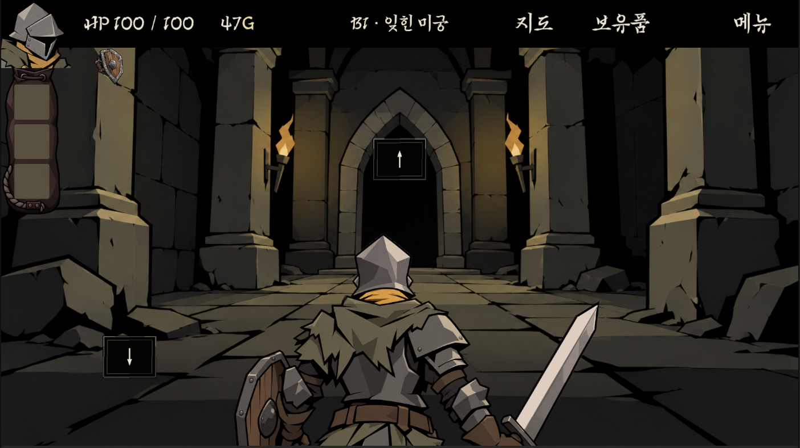
ProjectContext/B1-01-Original.png · approved_project_baselineOriginal B1 geometry and muted grey/olive stone; small torch warmth.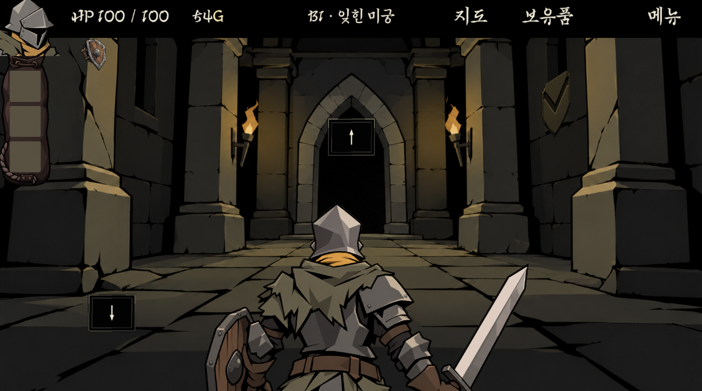
ProjectContext/B1-02-AcceptableGuardroom.png · acceptable_palette_variationUser acceptable image2; background variation stays in B1 color family.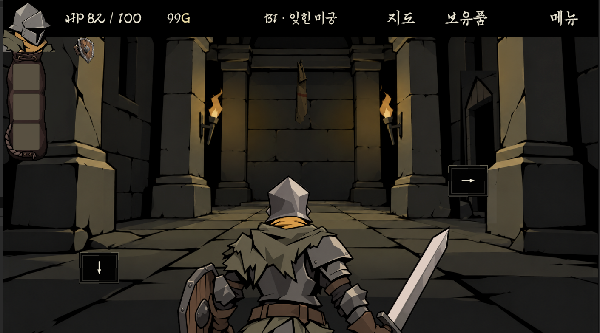
ProjectContext/B1-03-AcceptableBannerRoom.png · acceptable_palette_variationUser acceptable image3; some warmth, continuous foreground materials.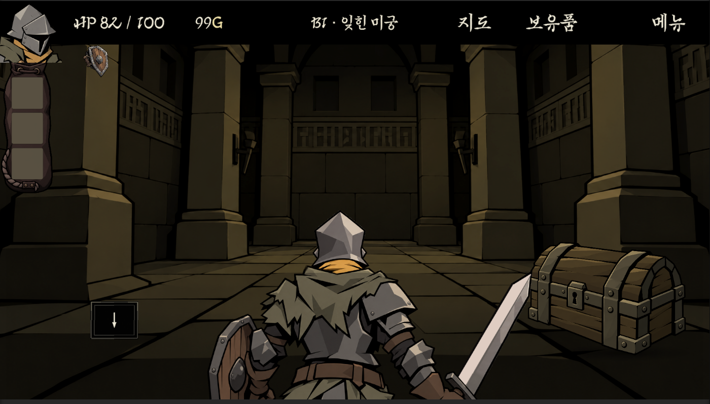
ProjectContext/B1-04-RejectedOathRoom.png · rejected_palette_driftUser rejected image4; unmotivated yellow/olive material drift, factory-clean large geometry.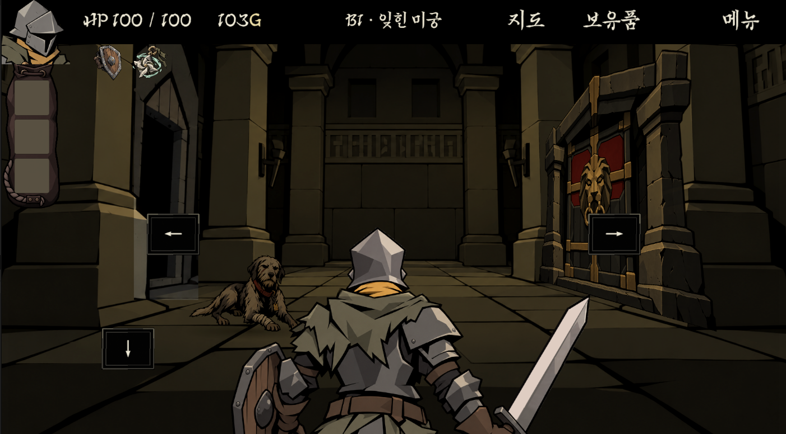
ProjectContext/B1-05-RejectedDoorRoom.png · rejected_palette_driftUser rejected image5; tinted room versus differently lit grey door frame creates seam.DD 최신 분위기 시각 기준7장
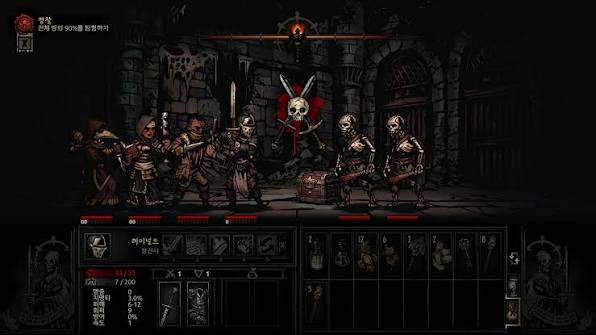
Images/01-DarkDungeonCombat.jpg · user_dd_moodDark stone combat; broad surrounding black; faces and bones focal.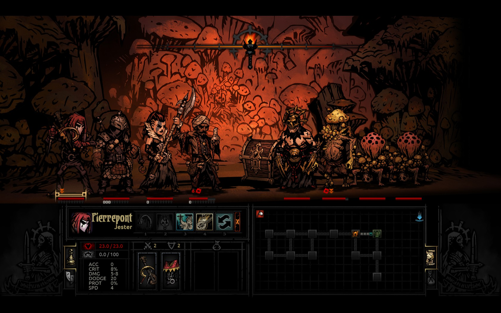
Images/02-FungalWarmCombat.png · user_dd_moodMotivated orange fungal scene; dark foreground and strong ink remain.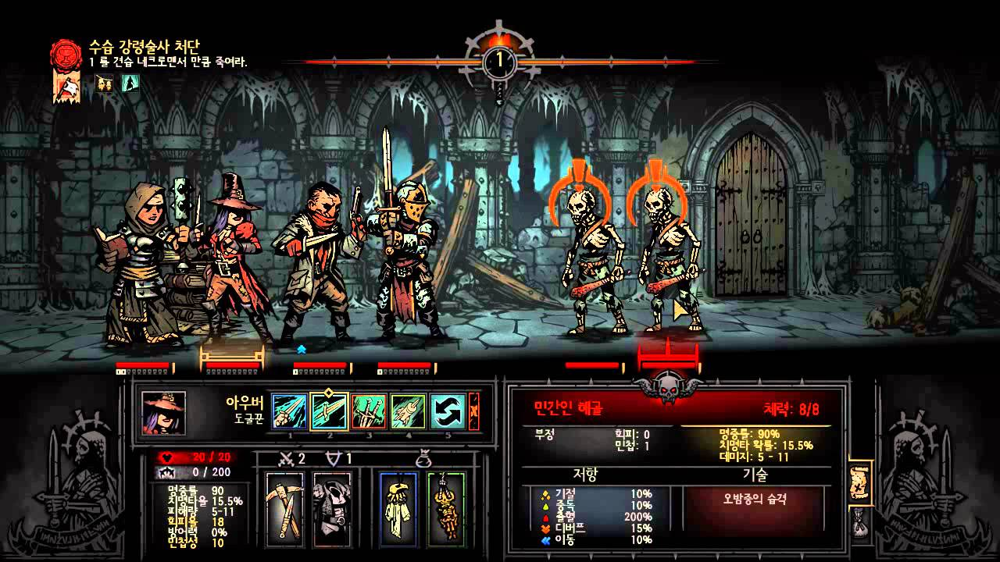
Images/03-ColdRuinsCombat.png · user_dd_moodCold stone; limited cyan flame; readable warm characters against it.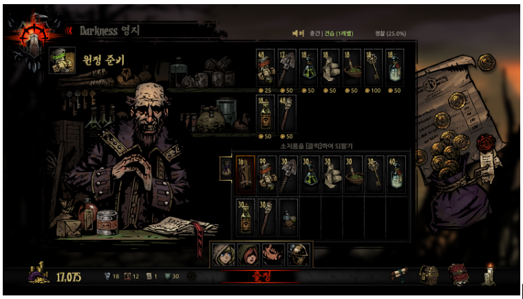
Images/04-ProvisionerDD1.png · user_dd_moodProvisioner; worn hand-drawn surfaces, broad black, quiet merchandise field.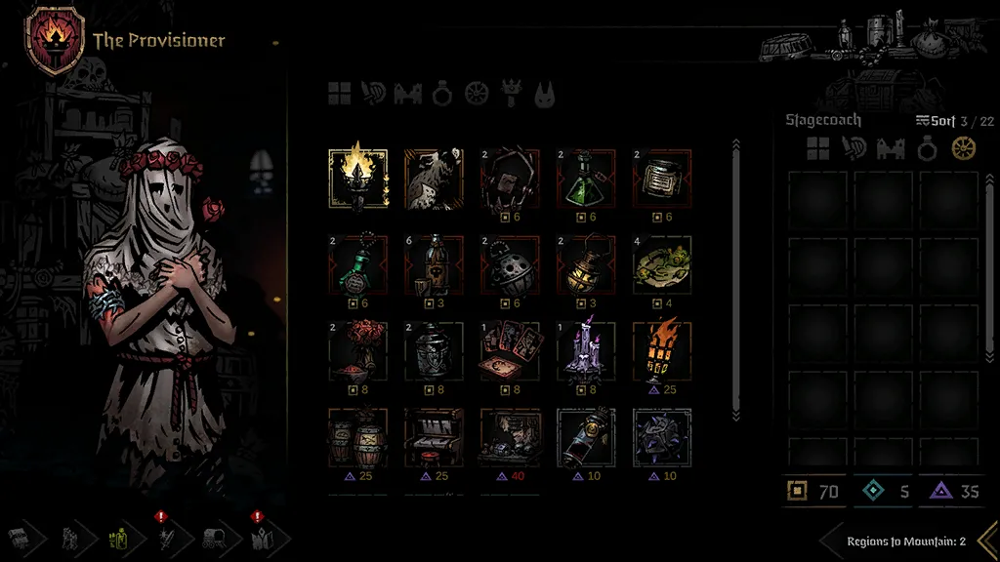
Images/05-ProvisionerDD2.png · user_dd_moodProvisioner; pale figure against dominant black with restrained icon colors.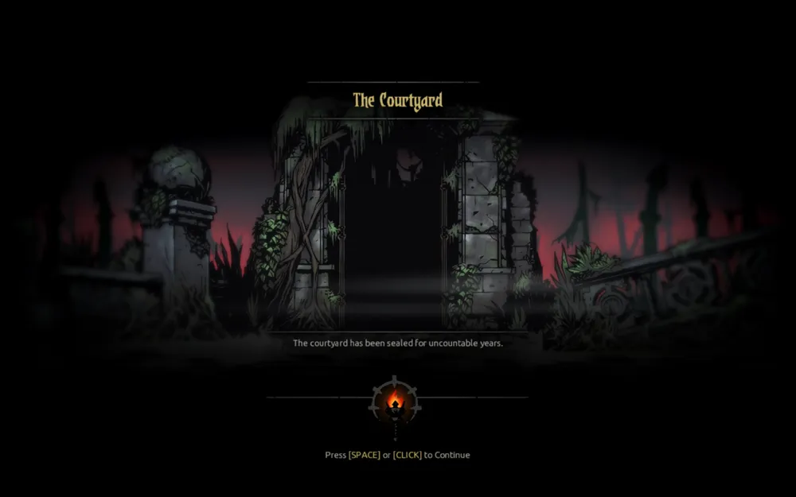
Images/06-CourtyardEntry.png · user_dd_moodCold ruined gate and limited red distant light; large black opening.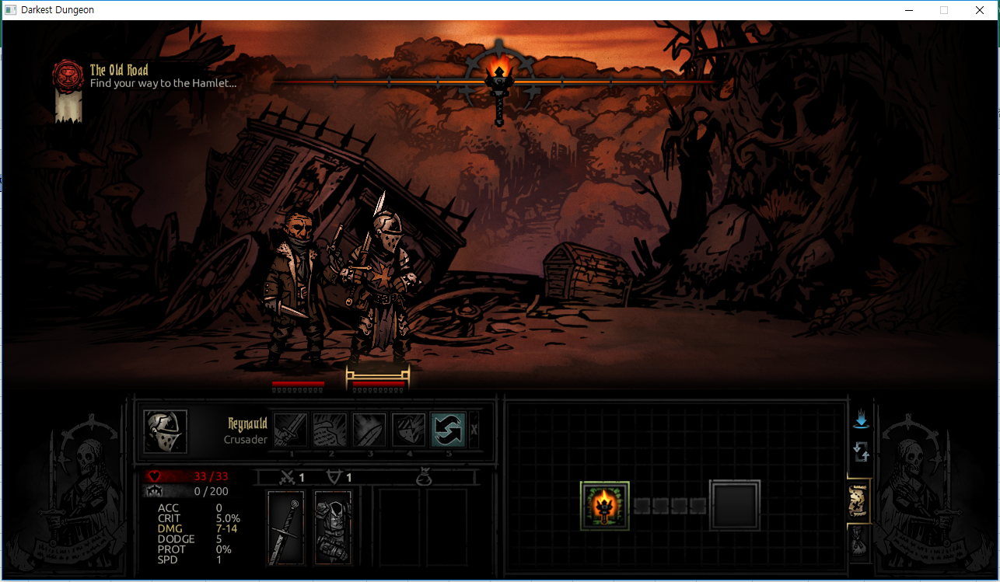
Images/07-OldRoad.png · user_dd_moodMotivated orange sky; nearly black trees and actors with small warm accents.